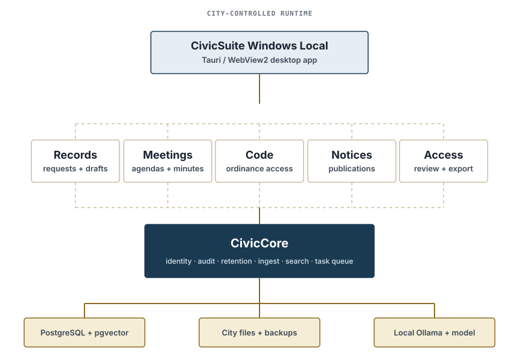

City-held by default
The default runtime avoids vendor cloud dependencies and outbound telemetry.
Open-source municipal infrastructure
CivicSuite brings everyday city hall work—records, meetings, municipal code, notices, and accessible public information—onto a computer the city controls. No cloud account and no telemetry.
Public beta. Built for evaluation today; not production-, city-, or procurement-ready.
CITY-CONTROLLED RUNTIME
The default profile keeps documents, audit history, the database, and the AI model on city-controlled hardware.
Why CivicSuite exists
Municipal teams often face cloud lock-in, recurring seat costs, scattered workflows, and AI tools that move sensitive material beyond the city's boundary.
CivicSuite takes a narrower path: local-first software for the high-friction work around public records, meetings, code, notices, and accessibility. It assists staff without pretending to replace their judgment—or the city's systems of record.
The city-core beta
CivicCore supplies the common foundation. Each module stays bounded around a real municipal job.
How it works
A single Windows MSI brings the desktop shell, portable database, local services, and model runtime together.
First run covers the city profile, first administrator, backup location, model download, checksum verification, and readiness checks.
Modules organize and draft. Staff review evidence, make decisions, and remain accountable for every public action.

Operating principles
The default runtime avoids vendor cloud dependencies and outbound telemetry.
No auto-release, auto-denial, auto-redaction, auto-enforcement, or legal determination.
Clean-machine checks, source pins, checksums, and honest status drive maturity claims.
Six city-core workflows ship in the beta. The broader catalog is clearly labeled queued, foundation, or planned.
Current status
CivicSuite Windows Local v1.0.2 is a GA candidate open for public beta. It has passed the project's clean-machine acceptance work and is available for hands-on evaluation.
Adoption boundary
Not production-ready.
Not city-ready, procurement-ready, macOS lifecycle-certified, or a full-suite release. No live municipal deployment is documented.
See module-by-module truthDocumentation
The umbrella repository is the canonical source for product status, installation, architecture, security, and release evidence.
Try it responsibly
Use representative, non-production material. Verify the installer. Test the fit. Tell the project exactly where it falls short.